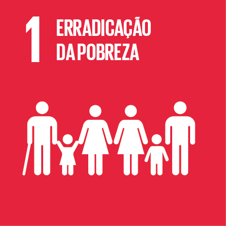
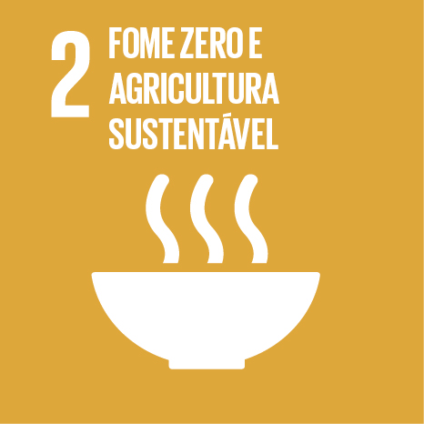
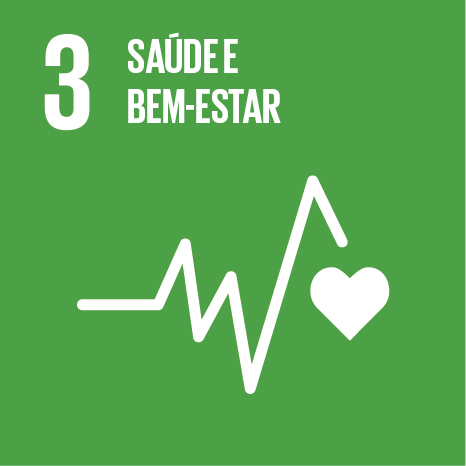
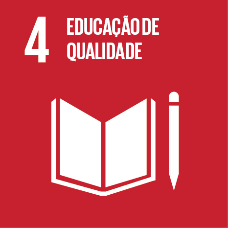
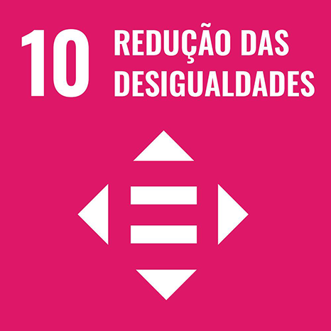

Juntos por um mundo melhor!
Projetos gratuitos de estímulo educacional, artes, música, futebol e geração de renda para as crianças e as famílias do bairro Pró Morar.


todos os meses

Uma casa de família que virou casa de muitas famílias
A Associação Clube da Família atua desde 2017 graças à persistência e à determinação da Dona Luci. Nossos projetos buscam mudar a vida de famílias carentes, especialmente das crianças que participam deles.
A sede é a própria casa da família da Dona Luci, cedida pelos filhos para abrigar os projetos. A ONG é totalmente filantrópica: se mantém com a renda do bazar da sede e com doações.
Uma vida inteira dedicada a cuidar de quem precisa
- Infância A família da Dona Luci já ajudava moradores de rua — a solidariedade vem de berço.
- Anos 80 Uma enchente em Votorantim despertou de vez sua atuação social.
- 2007 Liderou o ministério da mulher da Igreja Adventista e foi premiada na ASA (Associação Solidária Adventista) por ações sociais e cursos para a comunidade.
- 2018 – 2019 Nasce o “Clube das Mães”, que logo virou Clube da Família por atender a família inteira.
- 2020 A ONG é legalizada. Na pandemia, com os projetos pausados, a associação se cadastrou no banco de alimentos de Sorocaba para doar hortifrúti às famílias.
- Hoje 106 alunos por mês em música, arte, cultura, esportes, manicure e corte e costura — e novos projetos em estudo.
O que nos move
Missão
Ser reconhecida como uma organização referência na prestação de serviços sociais, promovendo inclusão e transformando vidas.
Visão
Assistir crianças e pessoas carentes com foco no desenvolvimento humano, por meio de ações sociais, educacionais e culturais.
Valores





Aprender, criar, brincar e conquistar autonomia


O bazar é o coração que mantém os projetos
Nossa principal fonte de renda é o bazar da sede. Vendemos roupas, calçados e utensílios recebidos em doação — tudo passa por triagem e lavagem e chega em ótimas condições.
Quero doarHistórias que se transformaram aqui
“Faço curso de pintura em tecido e em tela e, após postar fotos nas redes sociais, tive uma encomenda de uma pintura em tela. Isso é muito gratificante! Também faço curso de corte e costura: estou aprendendo porque quero ter uma renda trabalhando em casa e, com isso, ficar mais perto da minha família.”
“Eu estava me sentindo mal, pois passava por um problema familiar e precisava me ocupar fazendo algo. Através de uma criança que frequenta os projetos, soube da ONG e resolvi fazer uma visita. Comecei a fazer aulas de corte e costura e de pintura em tela e tecido, e simplesmente mudou a minha vida. Hoje estou muito feliz: conheci pessoas diferentes, converso com todas, também com as crianças, e me sinto realizada. Agradeço à Dona Luci pela oportunidade, ela é realmente uma mãe de coração enorme.”
“Minha filha era muito tímida e não se relacionava bem com outras crianças. Depois que começou a frequentar os projetos da ONG, perdeu a timidez e hoje é mais sociável. Participa do Clubinho do Saber, onde tem estímulo educacional, e faz a oficina de artes. Ela não perde nenhuma atividade e se desenvolve cada dia mais.”